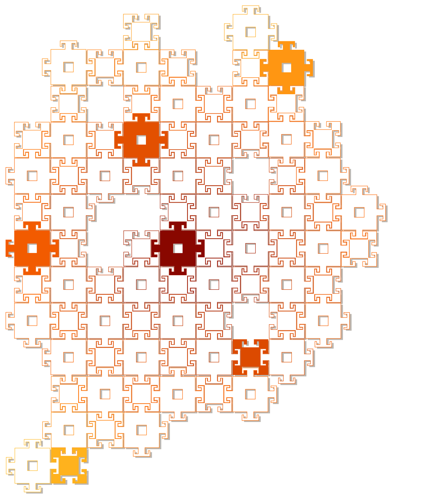

Publications
Incorporating Kinematic Properties into Fused Deposition Toolpath Optimization
Beyond layers: A 3D-aware toolpath algorithm for fused filament fabrication
An improved toolpath generation algorithm for fused filament fabrication